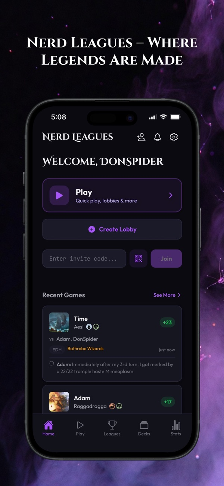
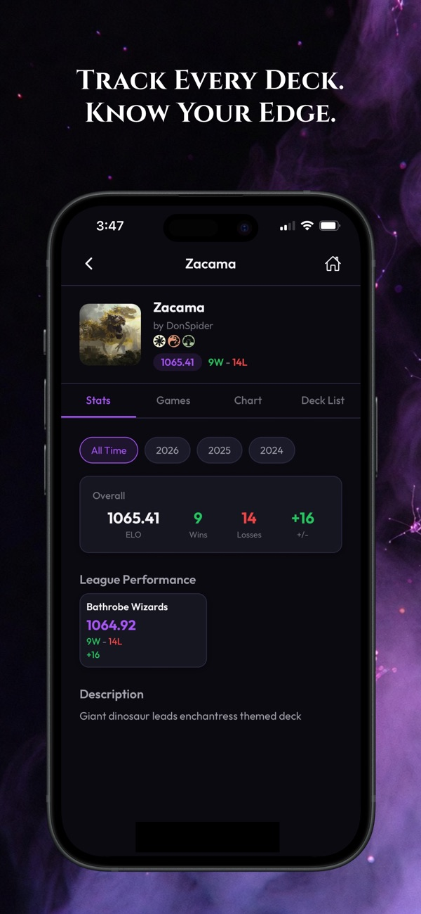

Nerd Leagues
A website and phone app for people who play the card game Magic: The Gathering. Build a deck, check that it's a fair match for your friends' decks, find the hidden combos in it, keep score on your phone, and play online. Over 800 players have signed up. I co-founded it with my brother Matt, and I built the phone app on my own.
An all-in-one companion for Magic players: a deck builder with Scryfall-style search, a Commander bracket checker, Combo Finder, leagues with ELO rankings, a life tracker app on iOS and Android, news and spoilers, and Battlefield, a virtual table for online play that's in an invite-only beta. Over 800 players so far.
A Flask platform (raw PyMySQL on MySQL/RDS, Flask-SocketIO, APScheduler, EC2 behind Cloudflare) with a server-rendered Tailwind/JavaScript front end, plus an Expo / React Native app on both stores that ships its own Node/Express API. Real-time online play over Socket.IO, and Claude-powered features built so the model can't invent a card.
Switch the reading level at the top at any time. Every section rewrites itself, from no jargon at all to the real terms.
The current status
Counted from the live database, 10 Nov 2026
Who it's for
In Magic, every player brings a deck of cards they built themselves. The most popular way to play with friends is called Commander: usually four players, each with a 100-card deck led by one legendary character. Building those decks, keeping them balanced against your friends' decks, and keeping track of a long four-player game is a lot of work. Nerd Leagues does that work.
Commander pods first, and everyone around them: casual groups who want even games, competitive players who want rankings, deck builders who live in search filters, and the local game stores that host league nights. One account covers the deck, the bracket, the combos, the league and the life total.
Four user groups, one data model: casual Commander pods, competitive players (leagues, ELO), deck builders (search, import/export, tagging) and local game stores (hosted leagues). Everything hangs off the user's decks, so a deck imported once feeds the bracket checker, Combo Finder's "fits your decks" panel, league play and the app.



The short version: everything a Magic player does around a game, from building the deck to keeping score, in one place.
How it started
It started with my own group of friends who play Magic. I had the idea for a site that did everything our group needed, and my brother Matt and I started building it in December 2023. The friends who play with us still shape it: a lot of the features started as their ideas.
In January 2026 we rebuilt it. AI coding tools had become good enough that I could build much more, much faster, and the site grew from a handful of tools into a full platform. That's also when people started showing up: 746 of our 836 players joined in the last year.
The vision came out of our own playgroup, and the playgroup still feeds it ideas. Matt and I built the first version together starting in December 2023. On 16 January 2026 we rebuilt it, and once Claude Code got good, I took on most of the building. Growth followed the rebuild: 746 of the 836 signups came in the 12 months before November 2026.
Started Dec 2023 as a shared Flask repo with Matt. Rebuilt 2026-01-16; since then most new code is mine, written with Claude Code, with the repo's CLAUDE.md carrying the rules it follows (including how to query the small production database without taking it down). Today: about 40 Flask blueprints, server-rendered Jinja templates with Tailwind and plain JavaScript (the website is not React; React lives in the mobile app). 746 of 836 signups landed in the trailing 12 months (10 Nov 2026 pull).
Players who have joined Nerd Leagues, by month
Building a deck
There are tens of thousands of Magic cards. Finding the right ones is most of deck building. Every search box on Nerd Leagues understands the same short search language Magic players already know from Scryfall, the main card-search site. Type a typo and it suggests what you probably meant instead of just saying "no results."
Already built your deck somewhere else? Bring it over from the two most popular deck sites, Moxfield and Archidekt, in one paste. Then draw sample hands to see how the deck feels before you ever shuffle it for real.
I wrote a Scryfall-style query language that powers every search on the site (t:creature c:g mv<=3 and friends), with "did you mean" hints instead of errors. Imports from Moxfield and Archidekt keep your zones and tags (split cards included), and tags survive the round trip. Export to Tabletop Simulator. The editor has a live deck-health strip, Grid, List and Pile views, and a playtester rebuilt as a real table: mulligan, keep, put cards on the bottom.
Query language: card_query.py parses to an expression tree, card_index.py evaluates it in one pass over ~37K cards held in memory, so search never hits the database. Unknown keys and values return suggestions, not errors. Card data syncs from Scryfall (a cache table, a daily sync and a 30-minute poll in production). Import parsers handle Moxfield and Archidekt formats (split cards, zone markers), tags round-trip, and TTS export.
Is my deck fair?
The worst Commander game is one where a friend brings a deck that's far stronger than everyone else's. Magic's makers now rate decks in brackets, from 1 (casual) to 5 (as strong as it gets), so a table can agree on what to bring. Working out your bracket by hand is tedious, so Nerd Leagues does it for you, tells you which cards push the deck up, and suggests what to cut to bring it down.
Paste a deck and get its bracket, the Game Changers and other cards that set it, and suggested cuts, each one re-rated so you see what it actually changes. There's a mana check too, with the real odds of drawing the colors you need. Every result gets a permalink to share with your pod before game night.
Primary source is Commander Spellbook's estimate-bracket API. If it's down, a fallback uses our own Game Changers list (Scryfall is:gamechanger) and marks the result as a minimum rather than pretending to be exact. The rules engine is pure and fixture-tested. Suggested cuts are scored by re-rating the deck without each candidate; the mana check uses hypergeometric odds.
Why it's honest: when the outside service it relies on goes down, the checker still answers, and it says plainly that the answer is a minimum.
Finding the combos
Some cards do something wild together: win the game on the spot, or repeat forever. Players call those combos, and there are a huge number of them. Combo Finder shows which combos are already hiding in your decks, which ones you're one card away from, and which new combos just came out with the latest set.
Combo Finder pulls from Commander Spellbook, the community's combo database, and checks it against your decks: complete combos, near-misses and what they need. New combos are filed under the set of their newest card, so you can see what a release just made possible, and a daily digest goes out on Discord.
Commander Spellbook's bulk export is about 680 MB, and the EC2 box has roughly 860 MB free, so loading it whole wasn't an option. The import streams it with ijson, runs daily, is incremental and resumable. Each combo is credited to the set of its newest card using a first-printing table back to Alpha. A "fits your decks" panel matches combos to the user's lists, and a daily Discord digest summarizes new ones.
The app in your pocket
I built the Nerd Leagues phone app on my own, from February to May 2026, and got it through Apple's and Google's reviews onto both app stores. Its main job is keeping score: everyone at the table tracks their life total on their own phone, and the game stays in sync.
You don't need an account to use the life tracker, and it works with no internet, which matters in the back room of a game store. Sign in and your decks, games and leagues come with you.
The app is the life tracker done right: each player on their own phone, kept in sync live with the website, plus your decks, games and leagues. Guest mode is a fully offline life tracker, no account needed; online features ask you to sign in. Sign in with Apple or Google and push notifications. I wrote every line and took it through both store reviews.
Expo / React Native with Expo Router, TypeScript, 37 screens. It ships its own backend: a Node.js + Express API with its own SQL migrations, JWT auth (stored in expo-secure-store), server-side verification of Apple and Google id_tokens, S3 uploads and Expo push notifications, against the same MySQL database. I deployed that API to an Ubuntu EC2 instance myself. A Socket.IO client connects straight to the Flask server, so phone and web share live game state. Solo repo, shipped to the App Store and Google Play.
Playing online
Battlefield is a virtual table. Load a deck you built on Nerd Leagues and play it against friends anywhere, moving your cards around just like you would at a real table. Everyone sees the same board instantly, and the cards in your hand stay secret. If your connection drops, you rejoin right where you were. It's in an invite-only test right now.
There's also a second way to play online, in testing: Bolt the Bird, the Magic AI I built, can draft and play against you here, with a full rules engine running the game.
Battlefield plays like a kitchen table, not like Arena: you move your own cards and the table handles the rules, which means any card works on day one. Moves show up instantly for everyone, hidden information (your hand, scry, reveals to one player) stays private, spectators can watch, and a dropped connection rejoins with the current board. Invite-only beta. For games with full rules enforcement, the Practice vs Bolt page plays through Bolt's engine.
Socket.IO. Clients apply their own move immediately; the server keeps one in-memory state per table for reconnects and spectators (never written to MySQL, idle tables dropped after 30 minutes). Every action is validated before it's relayed: you can only act on your own cards, payloads are sanitized, and a refused move sends board_restore to undo the client. Per-viewer rooms keep hidden information private. No rules engine by design; a small trigger map links rules text to the step of the turn it fires on. bolt_client.py is an optional link to Bolt's service, and the site never fails if Bolt is down.
AI that can't make things up
AI is good at writing and bad at facts: ask one for card suggestions and it may happily invent a card that doesn't exist. So Nerd Leagues never lets it. For deck suggestions, ordinary code first builds a list of real cards that fit, and the AI is only allowed to choose from that list. If it tries to pick anything else, the pick is thrown out.
The articles on the site are written by an AI writing team I built. Every night at 3 a.m. it picks up the day's topics, writes the posts following rules I wrote, reviews its own drafts, and saves them for a person to approve. Nothing publishes on its own.
Commander recommendations start from a real candidate pool (EDHREC rank plus the deck's theme), and Claude only ranks it, picking by position in the list, so it can't name a card that isn't there. It now covers 2,264 commanders. The blog is written by an agent I built that runs every night on the server: it claims the queue, drafts posts by the house rules, runs a review pass and leaves drafts for an admin to publish. News gets a batched AI summary too.
All Claude. commander_recs.py: a non-AI candidate pool (EDHREC rank + theme), Claude ranks it and may only return indices, enforced by validate_picks. A batch runner on the production box took coverage from 71 to 2,264 commanders in about two days, paced around the shared 5-hour usage window with retry after limits and scheduled around the other AI jobs. The blog agent is a Claude Code skill run headless at 3 a.m. by a systemd timer (claude -p "/auto-blog …"): claim the queue, write, review loop, save drafts. News analysis is one batched call per run. Lesson learned: one morning the blog job failed because the recommendations batch had used up the shared window, so jobs now leave headroom before others start.
The rule: the AI chooses, the data decides what it can choose from.
Making it look professional
In November 2026 I went through the whole site with one goal: make it look like an expensive agency built it. New visitors now get a home page that explains what Nerd Leagues is in four steps. The deck editor, the deck pages and the stats pages were redone, and every page was checked on a real phone screen before it went live.
The November 2026 polish pass: a new signed-out home page ("the all-in-one MTG companion") with a four-step tour, the deck editor's health strip and Grid/List/Pile views, deck hubs as card-art tiles, a collection page where you can add a deck you own, and phone layouts for Stats and Combos. Card pages now link to their set's price page.
Batch by batch: audit, fix, check in a real browser at desktop, 390 px and 360 px, deploy. New endpoints and a table for the collection page (a duplicate import returns 409). For SEO, card pages link to their set's price page, adding internal links to about 295 price pages served from an in-memory cache with no database query, and duplicate canonical tags were removed.
Running it on a small server
Nerd Leagues doesn't run on a giant cloud setup. It shares one modest server and one small database with my other projects. That means every feature has to be careful about memory and about how hard it leans on the database, and the jobs that run in the background are scheduled so they don't trip over each other.
Behind the pages there are about 20 scheduled jobs: card data from Scryfall every 30 minutes, the nightly combo import, the blog agent, AI recommendations, digests on Discord. They all share one server and one small database, so they're written to read only what changed rather than scanning everything.
Flask under gunicorn and systemd behind nginx on EC2, Cloudflare in front; MySQL on RDS with a 128 MB buffer pool, shared with my other services. About 20 APScheduler jobs. Patterns that keep it up: incremental reads over full scans, cached lookups with single-flight loading and back-off, streaming parses for large files, and AI jobs scheduled against a shared usage window.
Building it with a partner
Almost everything else I've built, I built alone. Nerd Leagues is the one I build with someone. Matt and I meet every week to go over where the project stands and what comes next, and our changes go through each other as proposals before they're merged in. Our playgroup and friends add ideas, articles and testing.
We split it by what each of us built: Matt built the league rankings, the card scanner and the website's life tracker. I built the deck builder and search, the bracket checker, Combo Finder, Battlefield, the AI features, and the phone app.
A shared repo since December 2023, worked through feature branches and pull requests, with a standing weekly meeting with Matt on the state of the project. Ownership by area: Matt leads leagues and ELO, the card scanner (OCR) and the web life tracker; I built search and the deck builder, the bracket checker, Combo Finder, Battlefield, the AI features, the scheduled jobs, Discord bot and draft/cube tools, and the mobile app and its API alone. Friends from our playgroup contribute ideas, articles and playtesting.
Questions people ask
What is Nerd Leagues, in one sentence?
A website and phone app with the tools Magic: The Gathering players use around every game: building decks, matching power levels, finding combos, keeping score and playing online.
A Flask platform plus a React Native app with its own Node API, covering deck building, bracket analysis, combo search, leagues, live game tracking and real-time online play.
Did you build it alone?
No, and that's part of the point. I co-founded it with my brother Matt and we build the website together; the ownership list is in chapter 11. The phone app and its server are mine alone.
Why doesn't Battlefield enforce the rules?
Because it's meant to feel like a real table, where players handle the rules themselves. That way every card ever printed works the day it comes out. For games where the computer runs every rule, there's Bolt's engine.
A full rules engine has to implement each card before it's playable. Battlefield validates ownership and payloads, keeps hidden information private and relays moves, so it supports every card immediately. Full enforcement is Bolt's Rust engine, reached through Practice vs Bolt.
Where does the card data come from?
Scryfall for cards (synced every 30 minutes), Commander Spellbook for combos and bracket estimates, EDHREC rankings for recommendation candidates, and TCGplayer for buying cards.
Does AI write the articles?
Yes, and I built the system that does it: an agent that writes nightly from rules I set, reviews its own drafts, and leaves them for a person to approve. It never publishes on its own.
What's the website built with?
Python on the server, with pages styled in Tailwind and made interactive with JavaScript. The phone app is React Native.
Flask with raw PyMySQL (no ORM), Jinja templates, Tailwind CSS and plain JavaScript, Flask-SocketIO, APScheduler, MySQL on RDS, S3, EC2, Cloudflare. The app is Expo / React Native with a Node/Express API.
Player and usage counts are first-party counts from the Nerd Leagues database, pulled 10 Nov 2026. Magic: The Gathering is a trademark of Wizards of the Coast; Nerd Leagues is an independent project.